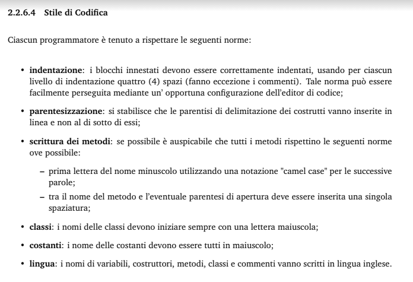
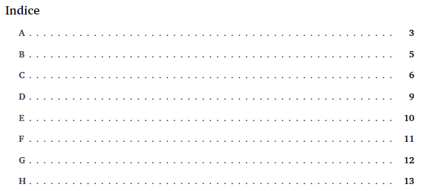

# SWException ### Corso di Ingegneria del Software Università degli Studi di Padova A.A. 2020/2021 Laurea triennale in informatica --- ## Aggiornamento della documentazione ### Analisi dei requisiti - Maggiore dettaglio - Aggiunta di diagrammi per aumentare la fruibilità dei contenuti <img src="imgs/UC.png" width="400em"/> note: Maggiore dettaglio nei casi d'uso per la visualizzazione degli elementi. ### Piano di qualifica <!-- TODO --> Aggiornamento delle attività di verifica Note: connesse all'avanzamento di versione dei documenti e all'avanzamento dell'attività di progetto ### Piano di progetto <!-- TODO --> - Pianificazione di nuovi incrementi - Aggiunti i consuntivi di periodo ed aggiornato il preventivo a finire. note: Pianificazione di nuovi incrementi, per ottenere più coerenza con il modello di sviluppo incrementale. ### Norme di progetto <!-- TODO --> - In ogni sezione sono state incluse le metriche di riferimento - Introdotto stile di codifica  ### Glossario Modifica indice e aggiunta termini.  --- ## Technology Baseline Nel PoC abbiamo fatto uso di: - Servizi AWS richiesti - Stripe - Next.js note: 2021-03-01 Servizi AWS: lambda, dynamo, cognito, API Gateway, S3 ### Riscontro Implementare i test il prima possibile Feedback positivo note: Abbiamo colto il consigli di implementare i test il prima possibile infatti ci siamo già messi all'opera!! La TB ha portato un risconto positivo da parte del docente Cardin. --- ## Andamento del progetto Come stiamo lavorando? note: - Durante il periodo successivo all'analisi dei requisiti ci siamo dedicati all'apprendimento delle tecnologie coinvolte per poi sviluppare la PoC - nel fare questo abbiamo deciso di continuare ad utilizzare un modello di sviluppo incrementale, in quanto crediamo di aver compreso maggiormente il suo funzionamente rispetto a quella che era la nostra percezione alla Revisione dei Requisiti ### Suddivisione del lavoro - Front-end - Back-end note: La suddivisione del lavoro tra i membri del gruppo è avvenuta principalemente tra front-end e back-end Questo ha portato molti vantaggi in termini di efficienza e ci ha permesso di lavorare in parallelo. ### Come ci siamo organizzati - Incrementi come da PdP - Sincronia tra front-end e back-end - OpenAPI 3.0 note: - Stiamo riuscendo ad eseguire gli incrementi come avevamo pianificato nel Piano di Progetto. - e per farlo al meglio serve essere sincronizzati tra chi si occupa di front-end e chi di back-end, in quanto i due ambiti di lavoro sono fortemente legati tra loro - L'utilizzo di OpenAPI, come ci è stato consigliato dal proponente, ci aiuta molto in questo. ### OpenAPI <img src="imgs/openAPI.png" width="150em"/> - Definire i contratti delle API - Parallelismo tra FE e BE - Facile implementazione di un mockup - Parallelismo nello sviluppo delle API note: - OpenAPI ci permettono di definire i contratti delle API che si andranno poi ad implementare - in questo modo i componenti del gruppo che lavorano al front-end possono iniziare a sviluppare anche se l'implementazione delle API necessarie non è ancora terminata - questo è reso possibile attraverso una facile e automatica implementazione di un endpoint di mockup delle API a partire dal documento che le definisce. - Oltre a ciò si ha anche un parallelismo tra i membri del gruppo che lavorano al backend, in quanto lo sviluppo di un API è completamente indipendente dalle altre e le sue caratteristiche sono già state definite attraverso lo standard OpenAPI --- ## Front-end Sviluppato le pagine definite nel PdP basandoci sul PoC Stiamo migliorando l'impianto grafico Svilupparo dei test Aggiunta di CI/CD --- ## Back-end Lo scoglio più grande per lo sviluppo del back end riguarda ora la definizione dei contratti delle API È necessario definirle seguendo dei pattern ben precisi, in modo da non trovarsi in iterazioni che portano alla perdita di tempo. Per questo, come consigliato dal proponente, si è deciso di approfondire il paradigma REST. Contestualmente alla codifica delle API procederemo con la produzione dei relativi test usanto la libreria Jest. Si procederà quindi alla verifica continua della code coverage. Inoltre si è implementata la Continuous Integration e Deployment. --- ## Consuntivi di periodo <img src="imgs/pdp.png" width="500em"/> ### Consolidamento dei requisiti <img src="imgs/consuntivi/consolidamento.png" width="400em"/> ### Progettazione della Technology baseline <img src="imgs/consuntivi/tb.png" width="400em"/> ### I incremento - Progettazione e codifica del Proof of Concept <img src="imgs/consuntivi/poc1.png" width="400em"/> ### II incremento - Progettazione e codifica del Proof of Concept <img src="imgs/consuntivi/poc2.png" width="400em"/> ### III incremento - Progettazione e codifica del Proof of Concept <img src="imgs/consuntivi/poc3.png" width="400em"/> --- ## Preventivo a finire <img src="imgs/pafs/paf_RP.png" width="700em"/> --- ## Grazie dell'attenzione